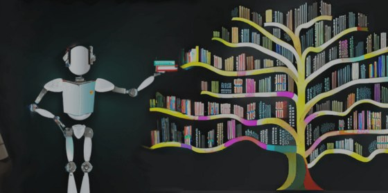

Tuần 09 · Tầng 02 & Tầng 04 (Lexical BM25 vs Contrastive Bi-Encoder)
Okapi BM25 Bằng gensim & Học Đối Tương Phản infonce_loss (7 Dòng) Bằng transformers Thuần
02 · Encoder & Context
04 · Loss & Alignment
Mẹo vàng phòng thi OlpAI'25: Thư viện
gensim trong danh sách chính thức đã tích hợp sẵn OkapiBM25Model tốc độ Cython, còn một Bi-Encoder thực chất chỉ là AutoModel + MeanPooling + F.normalize viết trong đúng 7 dòng!
Kaggle Competition · Semantic Equivalence
Quora Question Pairs
Can you identify question pairs that have the same intent?
Hơn 400.000 cặp câu hỏi kiểm chứng sức mạnh của Bi-Encoder huấn luyện bằng infonce_loss.
Mở cuộc thi trên Kaggle ↗
Kaggle Competition · Multilingual Topic Retrieval
Learning Equality - Curriculum Recommendations
Enhance learning by matching K-12 content to target topics

Đối sánh tài liệu học tập đa ngôn ngữ với cây chủ đề chuẩn bằng Retriever + Reranker.
Mở cuộc thi trên Kaggle ↗
- Kết hợp điểm mạnh của BM25 và Dense Vector: BM25 bắt chính xác tuyệt đối số hiệu điều khoản và từ hiếm, còn Bi-Encoder huấn luyện bằng InfoNCE phá bỏ hình nón hẹp (Anisotropy) để bắt câu đồng nghĩa khác từ vựng:
Bước 1 · Dùng Thư Viện Chuẩn
Dựng chỉ mục
OkapiBM25Model từ gensim & Hàm nhúng câu 7 dòng bằng transformers
bm25_biencoder_lib.py — 100% Thư Viện Có Sẵn Trong OlpAI'25
Khi nào cần tự build? 7 dòng infonce_loss là toàn bộ trái tim toán học của DPR, SimCSE, BGE và CLIP — thuộc lòng hàm này giúp bạn huấn luyện mọi bộ truy xuất từ con số 0:
masternlp/losses/infonce.py — SimpleBM25 & InfoNCE Đối Tương Phản Tối Giản
- Đối chứng Recall@50 trên Learning Equality giữa
gensim OkapiBM25Modelvà Bi-Encoder huấn luyện bằnginfonce_loss. - Khảo sát nhiệt độ trên Quora Question Pairs chỉ dùng
transformers+torchthuần.